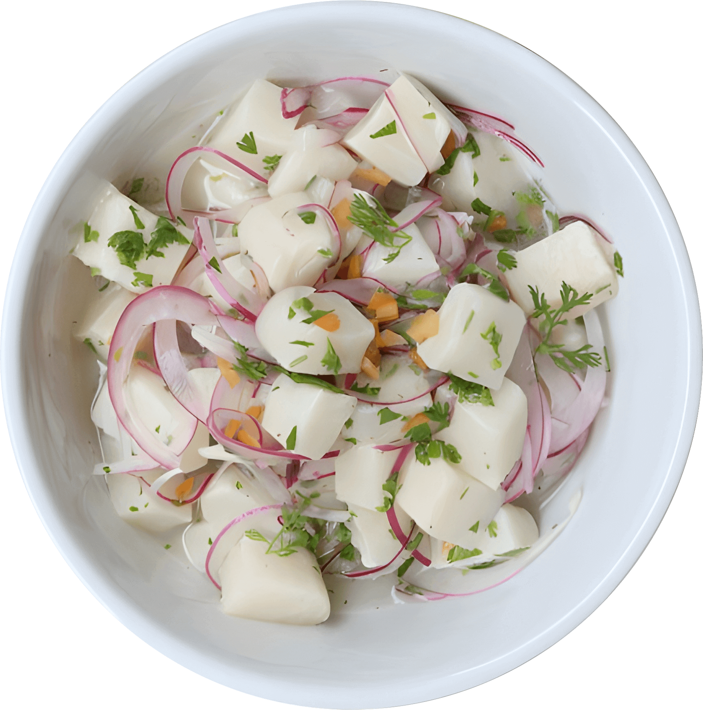

Plato Destacado
Ceviche
Salmón blanco marinado en jugo de limón acompañado de cebolla morada y perejil...


Plato destacado
Lomo Saltado
Lomo fino salteado con cebolla, pimiento rojo y tomate con base de salsa de soja...
Plato mas pedido
Arroz Chaufa
Arroz Salteado con morrón, verdeo, huevo y pollo con un toque de salsa de soja...